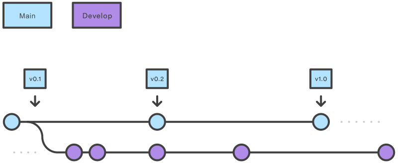
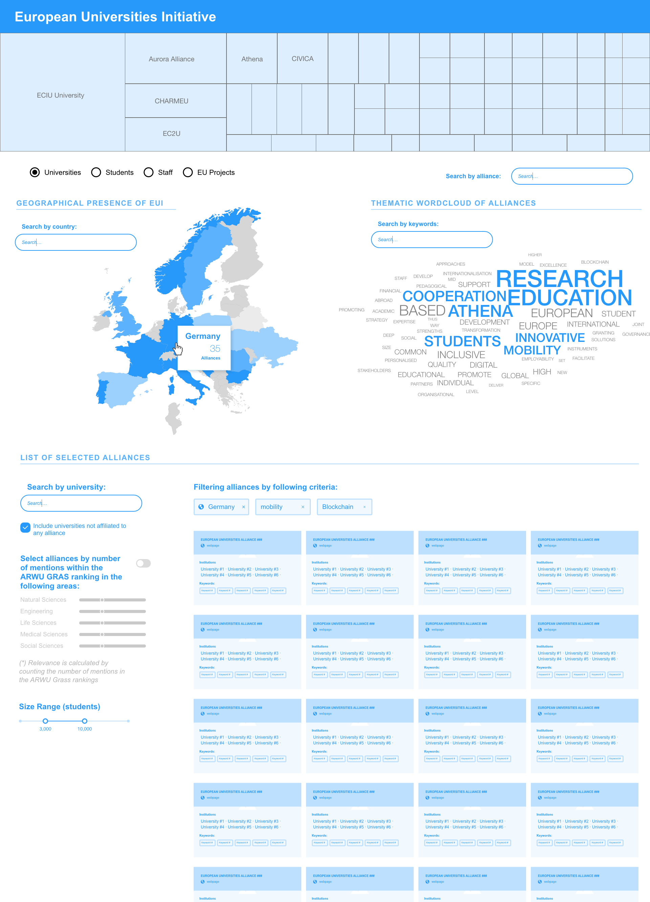
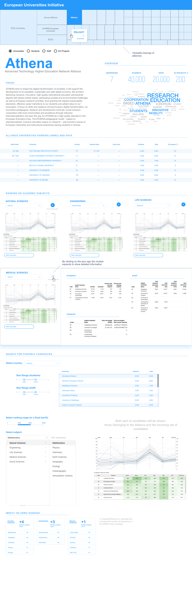

European University Alliances Observatory
The European University Alliances Observatory is an interactive analytics platform built by SIRIS Academic that tracks the research and education output of universities belonging to EU-funded alliances. It covers 10+ alliances, ~100 member institutions across Europe, and draws on publication records, EU funding data, staff demographics, and SDG alignment metrics.
The source code is private. This page describes the backend architecture I redesigned and the data contract it produces.
My role
I joined the project after an initial version of the backend had been built. My task was to redesign and simplify the pipeline architecture using Mage AI to make it more maintainable and correct, and to own the final JSON generation step that feeds the React frontend.
Architecture
The backend is a set of 10 Mage AI pipelines, each responsible for one data source or processing stage. A master orchestration pipeline triggers them in sequence.

Data sources integrated:
| Source | What it provides |
|---|---|
| OpenAlex | Publication counts, research fields, keyword wordclouds (2012–2022) |
| CORDIS | EU project participation counts, via SPARQL endpoint |
| ETER | Staff and student demographics per institution |
| ARWU | Shanghai Rankings, resolved via Wikidata |
| Wikidata | Entity disambiguation and cross-source ID mapping |
| Google BigQuery | SDG specialization indices (EU27 baseline comparison) |
Each pipeline reads from or writes to a PostgreSQL database (schema: eualliances). Entity disambiguation — matching the same institution across OpenAlex, CORDIS, ETER, ARWU, and Wikidata — was the hardest part of the data model.
Key contributions
Member disambiguation pipeline — The original logic for reconciling institution identities across six databases was complex and fragile. I refactored it end-to-end, reducing the block count by ~40% while making the matching more robust.
Alliance pipeline foundation — Moved database schema creation into the first pipeline block, removing an external dependency that had caused environment setup issues.
CORDIS and ETER pipelines — Debugged and corrected EU project counting logic and staff demographic extraction, both of which had silent data quality issues.
SDG specialization pipeline — Improved the topology of the BigQuery-based calculation that compares each alliance’s publication distribution against the EU27 baseline.
JSON generation — Fixed and owned the final pipeline block that merges all enriched tables into the hierarchical JSON file consumed by the frontend.
Output: the JSON artefact
The final pipeline produces a single JSON file — an array of alliance objects, each containing aggregated metrics and a nested array of member institutions. The React frontend loads this file once on startup and drives all views from it.
Simplified schema:
[
{
"name": "4EU+",
"display_name": "The 4EU+ Alliance",
"website": "https://4euplus.eu",
"coordinator": "Sorbonne University",
"funded_year": "2019",
"seal_of_excellence": true,
"oa_alliance_npubs": 591055,
"cordis_alliance_nprojects": 1487,
"oa_wordcloud": "[{\"count\": 4200, \"key_display_name\": \"Clinical trial\"}, ...]",
"sdg_si": { "3": 1.42, "7": 0.88, "13": 1.1 },
"number_of_institutions": 7,
"members": [
{
"institution_name": "Charles University",
"wikidata_key": "Q182516",
"oa_pubs_n": 54328,
"oa_pubs_top_field_1": "Medicine",
"cordis_projects_n": 612,
"eter_staff_n": 8269,
"eter_staff_women_pct": 48.2,
"eter_students_n": 42224,
"arwu_ranking": "301-400",
"nuts_id": "CZ01"
}
]
}
]Result
The platform is live at eua-observatory.sirislab.com and is used by SIRIS Academic for research and policy analysis work on European higher education.

